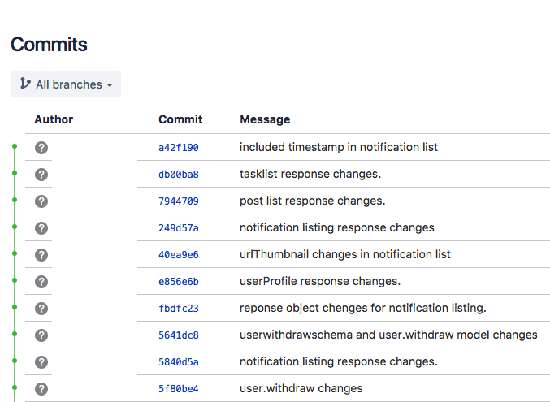

Welcome!
In this document I'm going to share with you my recommendations regarding codebase of REST API.
Why?
API users, such as iOS developers complain about bugs, which appear at API side pretty frequently. Features, which worked previously stop working after something was changed in another part of codebase. That says that codebase isn't solid and has some amount of issues.

Scope
I need to tell that I reviewed mostly code itself and not the infrastructure, like Amazon Web Services.
There are a lot of things, that could be reviewed and probably I'll do detailed review for other parts of the application. But for now let's dive deeper in what could be improved in the code and what have to be improved.

What are we waiting for? Let's start!
What does developer see first when he joins new team and going to work on codebase? Right, the repo. And it could say a lot about how team manages development. Things like readme, branch management, commit message convention are important. And let me tell you why.
1.1 Readme file
It shows newcomer what it is all about:
- What is this repo?
- What techlogies are used? Language? Platform?
- What other applications use this one?
- What style guide does the code follow?
- What commit message convention is used?
- How to launch this application?
- How to test it?
- How to deploy it?
It is hard for newcomer to figure out with the codebase without this entry point.
1.2 Branch management
When you work in a team it's very important to keep branch list clear.
This is how it looks now:
Main branch is 28MAR. Name is not obvious.
It has not been updated since 2017-03-15.
Active branch is *****-dynamodb-migration and
from this moment I've felt that something is wrong with the
codebase.
This is what it should be:
master branch is the main one. In most cases this
branch
stores code that is in production. It should be stable and secured
from altering.
Developers could create feature-based branches and once feature is
implemented and tested
- this branch should be merged into the master branch.
What are you talking about and why is it so important?
Well, all things, that I'm going to mention in this report work together and depend on each other. Correct branching management allows devs to configure Continuous Integration(CI) and Continuous Deployment(CD).
Continuous Integration basically just means that the
developer's working copies are synchronized with a shared mainline
several times a day.
Continuous Deployment is described as the logical next
step after continuous integration: Automatically deploy the product
into production whenever it passes QA!
So... code should be deployed to production as frequent as possible.
And it happens when developer merges his feature-based branch to the
master branch.
That's it. Small thing, but important one.
1.3 Commit message convention
It is a good idea to keep a note for yourself in the commit history. And it should be done properly, or you'll curse yourself... or a guy who wrote bad commit message.
This is how it looks now:
Hard to understand in which module the change took place.
Hard to understand sometimes what was the change.
Hard to understand what type of change it was.
This is what it should be:
I build my own commit message format, that is based on Angular commit message convention.
Example: feat(splash-screen)#15: add logo image
That's what it is about:
feat- type of the change. Could be feat, fix, ui, refactoring, etc.(splash-screen)- What place/module of the app has changed.#15- Ticket id in your Issue Tracker. Easier to understand why was the change.add logo image- Change description
The main issue with code is it's quality. Following style guides, using latest versions of the language, modern approaches allows to write short clear code that's less affected by bugs.
2.1 Using latest version of language
Just compare two pictures.
This is what it should be:
That's the same code with the same meaning. But it takes 5x less space and is more clear to understand. This code works like sync code and has no nesting parts, so developer has less opportunity to make a mistake.
There are a lot of places like this, that could be optimized.
2.2 Following style guides and best practices
Code should follow style guides and best practices, because these rules are written with blood... I'm joking, with thousands of hours of debugging. That costs $$$.
Reviewed codebase has a lot of places, where code style is bad and has to be fixed.
Some examples:
Deep code nesting or "Callback Hell":
Wrong HTTP codes (should be 404 instead of 200):
Too much code in one file (3168 lines, when average developer's screen contains just 30-40 lines):
Rare error handling:
Secret keys stored in repo (could be stolen by someone who has read access to the repo, like me. Should be stored in another place):
Different things in one file (should be separated into different modules):
And much more...
Code quality is pretty low. It’s obvious that code was written by several developers in the past and current version still uses some of old code without proper adaptation of it. Also it looks like code was written in hurry by junior/middle developers.
To allow developers to breath easier and product owners to get stable application I recommend to do next things:
Remove unused code
Right now there are a lot of code in the repo, that’s not used anymore. I calculated that about 70% of code is not used. Some code looks like it doesn’t belong to this project at all. That could be that when application was scaffolded - somebody copied his previous project and started to write code for this project over that old code.
Refactor everything
There is a mess between v1 & v2 versions in code. iOS app has to call some endpoints from v1 and some from v2, that doesn’t make sense for new app that doesn't have to support legacy version of API.
Follow style guides and best practices
ESLint could be used to validate code. It's automatic tool, that runs before every commit and prevents bad code to appear in the repo. That will save time of future improvements and feature implementations, reduce amount of bugs.
Start using typed JavaScript - TypeScript or Flow
That reduces amount of runtime errors helping developer to catch a bug as compile stage, before pushing app to production server. Must-have for apps that are going to evolve.
Start using Test-Driven Development (TDD, automated testing)
That’s the most important point in this list. TDD - it's when test is written before implementation of the feature. Without previous features covered by tests it’s harder to go forward or improve feature without breaking something that already worked. Must-have thing.